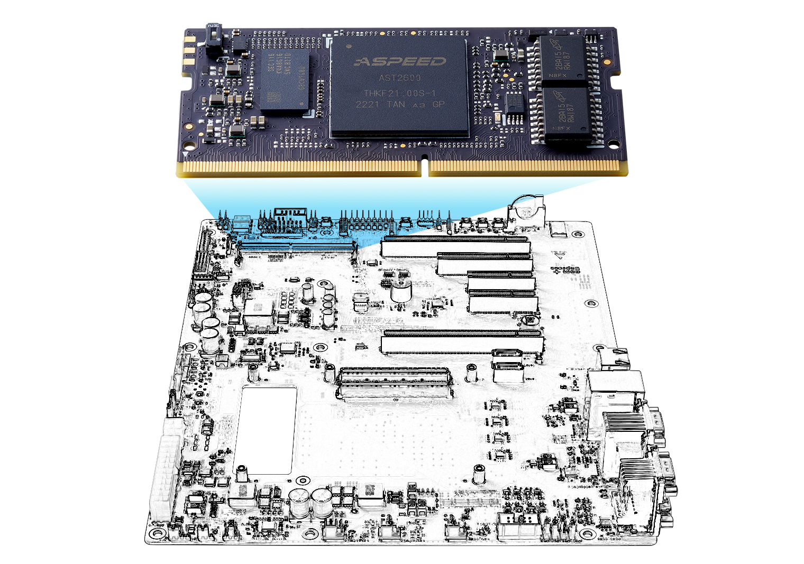
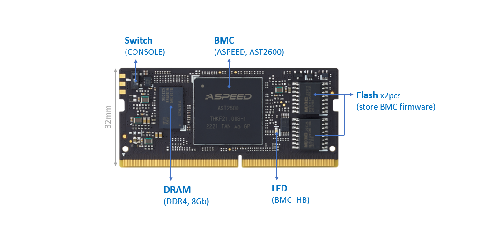
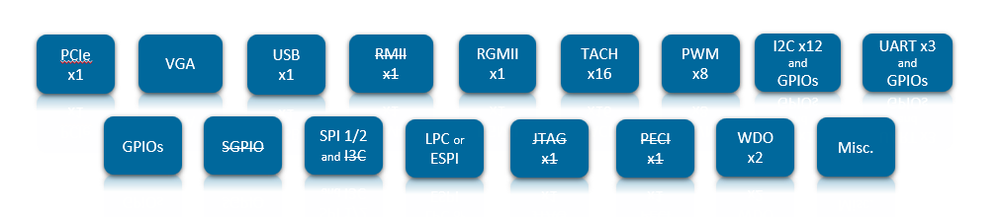

Smart Efficiency for Limitless Edge Management  RunBMC-AST2600 module is an ASPEED AST2600 BMC chip-based hardware and software solution as your building block for quick prototyping and saving your Total Cost of Ownership. Building block concept leverages RunBMC module form factor that is defined by BMC daughter board I/O from OCP. RunBMC-AST2600 module is designed to interface with host system, such as COM Express module, via PCIe/USB for KVM and UART for SOL and IPMB for monitoring CPU related temperature, voltage, current, and several I2C/SMB/GPIOs. Some of the interfaces will be accessed either through IPMItool (command line) or WebUI. Get details from IPMI Software Support if needed. Specification  Core Feature Remote management usage, up to 1000Mbit/s speed Remote KVM (graphics) console Virtual Media and IOS images Remote server power control Remote Serial over LAN (text console) Event Log support Hardware Monitoring (Voltage, RPM, Temperature, CPU Status, etc.) Overall health display on the main page Out of band management through shared or dedicated LAN Option to change LAN connection interface at Runtime System Firewall LDAP/AD/RADIUS Support Remote BIOS/BMC Update Event Log Filter User Management Media Redirection Settings PAM Order Settings SSL settings SMTP Settings FRU Information Hardware Interface Interface and pin-out leverages RunBMC Rev. 1.4.1 specifications  1x PCIe Gen2 Up to 2x USB 1x VGA 1x RMII and 1x RGMII 16x TACH and 8x PWM Up to 13x I2C and multiple GPIOs (for user) Up to 3x UART and multiple GPIOs (for user) GPIOs (some of them are used for communication with CPU, some of them are free for user) 1x LPC multiple SPI (not for user) Misc. and Watchdog Block Diagram Diagram below illustrates how RunBMC module interfaces with COM Express Type 7 Module/Carrier Note : interfaces marked with * are not enabled Pinout & Signal Description Pin Summary The table below is a comprehensible list of all signal pins supported on the 260-pin RunBMC edge connectors as defined by RunBMC rev. 1.4.1 specifications. Signals described in the specifications but not supported on the RunBMC-AST2600 are marked with strikethrough. In addition, most of the pins are multi-functional, thus is dependent on the firmware porting. Get the default features in Signal Description Pin# Name Name Pin# 1 VDD_12V_STBY VDD_RGMII_REF 2 3 VDD3_3V_STBY VDD3_3V_STBY 4 5 VDD3_3V_STBY VDD3_3V_STBY 6 7 VDD3_3V_STBY GND 8 9 GND DACG 10 11 GND DACB 12 13 GPIO0_SGPMLD DACR 14 15 GPIO1_SGPMI VGAHS_GPIO2 16 17 GPIO3_SGPMO VGAVS_GPIO4 18 19 GPIO5_SGPMCK DDCCLK_GPIO6 20 21 CONSOLERX DDCDAT_GPIO8 22 23 CONSOLETX GND 24 25 GPIO7 PWM0_GPIO10 26 27 PWM2_GPIO9 PWM1_GPIO12 28 29 PWM4_GPIO11 PWM3_GPIO14 30 31 PWM6_GPIO13 PWM5_GPIO16 32 33 GND PWM7_GPIO18 34 35 GPIO15 GPIO19 36 37 GPIO17 GPIO20 38 39 GND GPIO21_PASSTHRU2_OUT 40 41 UART1RX_GPIO23 UART2RX_GPIO22 42 43 UART1TX_GPIO0 UART2TX_GPIO24 44 45 GND GPIO25 46 47 I2C8SCL_GPIO27 I2C13SCL_GPIO26 48 49 I2C8SDA_GPIO29 I2C13SDA_GPIO28 50 51 GND GND 52 53 I2C7SCL_GPIO31 I2C6SCL_GPIO30 54 55 I2C7SDA_GPIO33 I2C6SDA_GPIO32 56 57 GND GND 58 59 GPIO35_FWSPIWP# I2C5SCL_GPIO34 60 61 GPIO37_byDICATOR# I2C5SDA_GPIO36 62 63 FWSPICS0# GND 64 65 FWSPIMOSI_IO0 GPIO38 66 67 FWSPIMISO_IO1 GPIO39 68 69 FWSPI_IO2_GPIO41 GPIO40 70 71 FWSPI_IO3_GPIO43 GPIO42 72 73 FWSPICK GPIO44 74 75 FWSPICS1# GPIO45_PASSTHRU1_OUT 76 77 PWRGD TACH0_GPIO46 78 79 GPIO47 TACH1_GPIO48 80 81 GPIO49 TACH2_GPIO50 82 83 WDTRST2_GPIO51 TACH3_GPIO52 84 85 GPIO53 TACH4_GPIO54 86 87 GPIO55 TACH5_GPIO56 88 89 GPIO57 TACH6_GPIO58 90 91 WDTRST1_GPIO59 TACH7_GPIO60 92 93 GPIO61 TACH8_GPIO62 94 95 GPIO63 TACH9_GPIO64 96 97 CPU_RST# TACH10_GPIO65 98 99 RESERVED_GPIO67 TACH11_GPIO66 100 101 GPIO69 TACH12_GPIO68 102 103 GPIO71 TACH13_GPIO70 104 105 GPIO73 TACH14_GPIO72 106 107 GPIO75 TACH15_GPIO74 108 109 GPIO76 GND 110 111 PECIVDD PECI 112 113 GPIO77 GND 114 115 GPIO79 SPI2CK_GPIO78 116 117 GPIO81 SPI2MISO_GPIO80 118 119 GPIO83 SPI2MOSI_GPIO82 120 121 GPIO85_PASSTHRU1_by SPI2CS0#_GPIO84 122 123 I2C2SCL_GPIO87 SPI2CS1#_GPIO86 124 125 I2C2SDA_GPIO89 GND 126 127 GND I2C1SCL_GPIO90 128 129 GPIO91_I2C14SCL I2C1SDA_GPIO92 130 131 GPIO93_I2C14SDA GND 132 133 GND I2C4SCL_GPIO94 134 135 GPIO95_I2C16SCL I2C4SDA_GPIO96 136 137 GPIO97_I2C16SDA GPIO98 138 139 GND GPIO99 140 141 I2C12SCL_GPIO100 PERSTN 142 143 I2C12SDA_GPIO101 GPIO102_UART3RX 144 145 GND GPIO103_UART3TX 146 147 PERXN GPIO104_UART4RX 148 149 PERXP GPIO105_UART4TX 150 151 GND VDD_LPC3V3_ESPI1V8 152 153 PETXN GPIO106 154 155 PETXP GPIO107 156 157 GND GPIO108 158 159 PEREFCLKN GPIO109_PASSTHRU2_by 160 161 PEREFCLKP JTAG1TRST 162 163 GND JTAG1TDO 164 165 LPCRST#_ESPIRST# JTAG1TDI 166 167 LPCD1_ESPID1 JTAG1RTCK 168 169 LPCD0_ESPID0 JTAG1TCK 170 171 LPCIRQ#_ESPIALERT# JTAG1TMS 172 173 LPCFRAME#_ESPICS# ADC0 174 175 LPCD3_ESPID3 ADC1 176 177 LPCD2_ESPID2 ADC2 178 179 LPCCLK_ESPICLK ADC3 180 181 I2C9SCL ADC4 182 183 I2C9SDA ADC5 184 185 GND ADC6 186 187 I2C10SCL_GPIO110 ADC7 188 189 I2C10SDA_GPIO111 SYSCS#_GPIO112 190 191 GND SYSMISO_GPO1 192 193 GPIO113_I2C15SCL SYSMOSI_GPO2 194 195 GPIO115_I2C15SDA SYSCK_GPIO114 196 197 GND SPI1CS0#_GPIO116 198 199 I2C11SCL_GPIO117 SPI1MOSI_IO0_GPO3 200 201 I2C11SDA_GPIO118 SPI1MISO_IO1_GPO4 202 203 GND GPO5_SPI1_IO2 204 205 I2C3SCL_GPIO119 GPIO120_SPI1_IO3 206 207 I2C3SDA_GPIO121 SPI1CK_GPIO122 208 209 GPIO123_USB2BVBUSSNS SPI1CS1#_GPIO124 210 211 GPIO125_USB2AVBUSSNS GND 212 213 GPIO126_USB2APWREN RMIIMDIO 214 215 GND RMIICRSDV 216 217 USB2A_HD_DN RMIIMDC 218 219 USB2A_HD_DP RMIIRCLKI 220 221 GND RMIIRXER 222 223 USB2B_D_DN RMIITXEN 224 225 USB2B_D_DP GND 226 227 GND RMIIRXD0 228 229 TRD0P_RGMIITXD0 RMIIRXD1 230 231 TRD0N_RGMIIRXTD0 GND 232 233 GND RMIITXD0 234 235 TRD1N_RGMIIRXD1 RMIITXD1 236 237 TRD1P_RGMIITXD1 GND 238 239 GND PHYLED1_RGMIITXCK 240 241 TRD2P_RGMIITXD2 PHYLED2_RGMIIRXCTL 242 243 TRD2N_RGMIIRXD2 PHYLED3_RGMIITXCTL 244 245 GND GPIO127_RGMIIMDC 246 247 TRD3N_RGMIIRXD3 GPIO128_RGMIIMDIO 248 249 TRD3P_RGMIITXD3 GPIO129_RGMIIRXCK 250 251 GND GPI0_ADC8 252 253 BMC_RESET# GPI1_ADC9 254 255 GPI3_ADC11 GPI2_ADC10 256 257 GPI5_ADC13 GPI4_ADC12 258 259 GPI7_ADC15 GPI6_ADC14 260 Note: All of the SPI interfaces, such as FWSPI, SPI1, SPI2, SYSSPI, are for engineering testing purposes, not for user usage Signal Description Most of the interfaces defined by OCP RunBMC specifications are multi-functional usage and is dependent on firmware porting. Their default settings are marked in “Description (default firmware)” ADC Analog-to-Digital Conversion. Maximum 16x ADC pins. 8 of them are multi-functional and dependent on the firmware setting. Name Pin# Description (default function) Note ADC0 174 Voltage monitor for 12V_ATX_4P ADC1 176 Voltage monitor for 12V ADC2 178 Voltage monitor for 5VSB ADC3 180 Voltage monitor for 5V ADC4 182 Voltage monitor for 3V3SB ADC5 184 Voltage monitor for 3V3 ADC6 186 Voltage monitor for RTC coin battery ADC7 188 Voltage monitor for 1V8SB GPI0_ADC8 252 General Purpose Input OEM command GPI1_ADC9 254 General Purpose Input OEM command GPI2_ADC10 256 General Purpose Input OEM command GPI3_ADC11 255 General Purpose Input OEM command GPI4_ADC12 258 General Purpose Input OEM command GPI5_ADC13 257 General Purpose Input OEM command GPI6_ADC14 260 General Purpose Input OEM command GPI7_ADC15 259 General Purpose Input OEM command Note: use GPI, GPIO, GPO through OEM command. Get details in IPMI Software Support PCIe Up to PCIe Gen2 x1 lane connections. This interface shall be capable of PCI-Express “Endpoint” functionality. Name Pin # Description (default function) Note PERXN 147 PCI-Express Receive Negative PERXP 149 PCI-Express Receive Positive PETXN 153 PCI-Express Transmit Negative PETXP 155 PCI-Express Transmit Positive PEREFCLKN 159 PCI-Express Reference Clock Negative PEREFCLKP 161 PCI-Express Reference Clock Positive PERSTN 142 PCI-Express Reset Signal, Active-low Ethernet and RGMII Connect to a LAN controller for dedicated management Ethernet port. Name Pin # Description (default function) Note TRD0P_RGMIITXD0 229 1000BASE-T Differential Pair Positive TRD1P_RGMIITXD1 237 1000BASE-T Differential Pair Positive TRD2P_RGMIITXD2 241 1000BASE-T Differential Pair Positive TRD3P_RGMIITXD3 249 1000BASE-T Differential Pair Positive TRD0N_RGMIIRXTD0 231 1000BASE-T Differential Pair Negative TRD1N_RGMIIRXD1 235 1000BASE-T Differential Pair Negative TRD2N_RGMIIRXD2 243 1000BASE-T Differential Pair Negative TRD3N_RGMIIRXD3 247 1000BASE-T Differential Pair Negative PHYLED1_RGMIITXCK 240 PHY LED Signal 1 PHYLED2_RGMIIRXCTL 242 PHY LED Signal 2 PHYLED3_RGMIITXCTL 244 PHY LED Signal 3 GPIO127_RGMIIMDC 246 General Purpose Input Output GPIO128_RGMIIMDIO 248 General Purpose Input Output GPIO129_RGMIIRXCK 250 General Purpose Input Output RMII/NCSI Not supported Name Pin # Description (default function) Note RMIIRXD0 228 RMII / NC-SI Receive Data Not supported RMIIRXD1 230 RMII / NC-SI Receive Data Not supported RMIITXD0 234 RMII / NC-SI Transmit Data Not supported RMIITXD1 236 RMII / NC-SI Transmit Data Not supported RMIIMDIO 214 RMII Management Interface Input / Output Not supported RMIICRSDV 216 RMII / NC-SI Carrier Sense / Receive Data Valid Not supported RMIIMDC 218 RMII / NC-SI 50 MHz Reference Clock Not supported RMIIRCLKI 220 RMII / NC-SI 50 MHz Reference Clock Not supported RMIIRXER 222 RMII / NC-SI Receive Data Error Not supported RMIITXEN 224 RMII / NC-SI Transmit Enable Not supported VGA Name Pin # Description (default function) Note DACB 10 DAC B channel output DACG 12 DAC G channel output DACR 14 DAC R channel output VGAHS_GPIO2 16 VGA horizontal sync output VGAVS_GPIO4 18 VGA vertical sync output DDCCLK_GPIO6 20 VGA DDC clock DDCDAT_GPIO8 22 VGA DDC data JTAG Not supported Name Pin # Description (default function) Note JTAG1TRST 162 Defines Test Reset, output from BMC Not supported JTAG1TDO 164 Test Data Out, input to BMC Not supported JTAG1TDI 166 Test Data In, output from BMC Not supported JTAG1RTCK 168 Return Test Clock, input to BMC (if used) Not supported JTAG1TCK 170 Test Clock, output from BMC Not supported JTAG1TMS 172 Test Mode Select, output from BMC Not supported USB2A Host/Device The Interface shall provide a USB interface capable of both USB host and USB device functionality, called USB2A. Note: only support USB device. connect to USB from CPU as KVM function Name Pin # Description (default function) Note USB2A_HD_DN 217 USB Device only for KVM USB2A_HD_DP 219 USB Device only for KVM GPIO125_USB2AVBUSSNS 211 Reserved GPIO GPIO126_USB2APWREN 213 Reserved GPIO USB2B Device Not supported Name Pin # Description (default function) Note USB2B_D_DN 223 Not supported USB2B_D_DP 225 Not supported GPIO123_USB2BVBUSSNS 209 Reserved GPIO LPC/ESPI The Interface provides both a Low Pin Count (LPC) and Enhanced Serial Peripheral Bus (eSPI) combined onto the same physical pins. The RunBMC module designer may choose to multiplex with hardware if software pin multiplexing is not supported between these interfaces on the BMC SoC. Name Pin # Description (default function) Note LPCRST#_ESPIRST# 165 Active-low bus reset input Default as LPC LPCD1_ESPID1 167 Address & Data bus bits 0 to 3 Default as LPC LPCD0_ESPID0 169 Address & Data bus bits 0 to 3 Default as LPC LPCIRQ#_ESPIALERT# 171 Serial Interrupt Request Output Default as LPC LPCFRAME#_ESPICS# 173 Frame Default as LPC LPCD3_ESPID3 175 Address & Data bus bits 0 to 3 Default as LPC LPCD2_ESPID2 177 Address & Data bus bits 0 to 3 Default as LPC LPCCLK_ESPICLK 179 Bus Clock Input (33.3 MHz) Default as LPC I2C Maximum 16x I2C busses. Most of them are multi-functional, I2C or GPIO, dependent on firmware porting. Name Pin # Description Note I2C1SCL_GPIO88 128 as I2C (BMC as Master) I2C1SDA_GPIO90 130 as I2C (BMC as Master) I2C2SCL_GPIO87 123 as I2C (BMC as Master) I2C2SDA_GPIO89 125 as I2C (BMC as Master) I2C3SCL_GPIO119 205 as IPMB I2C3SDA_GPIO121 207 as IPMB I2C4SCL_GPIO94 134 Not supported I2C4SDA_GPIO96 136 Not supported I2C5SCL_GPIO34 60 as I2C (BMC as Master) I2C5SDA_GPIO36 62 as I2C (BMC as Master) I2C6SCL_GPIO30 54 as SSIF and connect to PCH PCH locates on COMe module I2C6SDA_GPIO32 56 as SSIF and connect to PCH PCH locates on COMe module I2C7SCL_GPIO31 53 as I2C (BMC as Master) I2C7SDA_GPIO33 55 as I2C (BMC as Master) I2C8SCL_GPIO27 47 as I2C (BMC as Slave) connect to COMe module’s I2C. COMe module’s I2C as Master I2C8SDA_GPIO29 49 as I2C (BMC as Slave) connect to COMe module’s I2C. COMe module’s I2C as Master I2C9SCL 181 as I2C (BMC as Master) connect to a thermal sensor I2C9SDA 183 as I2C (BMC as Master) connect to a thermal sensor I2C10SCL_GPIO110 187 as I2C (BMC as Master) I2C10SDA_GPIO111 189 as I2C (BMC as Master) I2C11SCL_GPIO117 199 Not supported I2C11SDA_GPIO118 201 Not supported I2C12SCL_GPIO100 141 as I2C (BMC as Master) I2C12SDA_GPIO101 143 as I2C (BMC as Master)) I2C13SCL_GPIO26 48 as I2C (BMC as Master) I2C13SDA_GPIO28 50 as I2C (BMC as Master) GPIO91_I2C14SCL 129 as GPIO OEM command GPIO93_I2C14SDA 131 as GPIO OEM command GPIO113_I2C15SCL 193 asGPIO OEM command GPIO115_I2C15SDA 195 as GPIO OEM command GPIO95_I2C16SCL 135 as GPIO OEM command GPIO97_I2C16SDA 137 as GPIO OEM command Note: use GPI, GPIO, GPO through OEM command. Get details in IPMI Software Support UART Maximum 5x UART interfaces. One UART named as CONSOLE (UART5) for default BMC console output. Name Pin # Description (default function) Note GPIO15 35 Porting as UART1 CTS GPIO17 37 Porting as UART1 RTS UART1RX_GPIO23 41 UART1 Receive Data UART1TX_GPIO0 43 UART1 Transmit Data GPIO19 36 Porting as UART2 CTS GPIO20 38 Porting as UART2 RTS UART2RX_GPIO22 42 UART2 Receive Data UART2TX_GPIO24 44 UART2 Transmit Data GPIO102_UART3RX 144 as General Purpose Input GPIO103_UART3TX 146 as General Purpose Input GPIO104_UART4RX 148 as General Purpose Input GPIO105_UART4TX 150 as General Purpose Input CONSOLERX 21 Console UART Receive Data (UART5) for BMC debug CONSOLETX 23 Console UART Transmit Data (UART5) for BMC debug Note: use GPI, GPIO, GPO through OEM command, get detail on IPMI Software Support PWM/TACH Maximum 8x PWM outputs. Driven from the BMC, these outputs are intended to drive fans or pump resent in the system. Maximum 16x Tachometer inputs to the BMC. Name Pin # Description (default function) Note PWM0_GPIO10 26 Pulse Width Modulation Channel 0 PWM1_GPIO12 28 Pulse Width Modulation Channel 1 PWM2_GPIO9 27 Pulse Width Modulation Channel 2 PWM3_GPIO14 30 Pulse Width Modulation Channel 3 PWM4_GPIO11 29 Pulse Width Modulation Channel 4 Not supported PWM5_GPIO16 32 Pulse Width Modulation Channel 5 Note supported PWM6_GPIO13 31 Pulse Width Modulation Channel 6 PWM7_GPIO18 34 Pulse Width Modulation Channel 7 Name Pin # Description Note TACH0_GPIO46 78 Use as FAN0 Tacho function TACH1_GPIO48 80 Use as FAN1 Tacho function TACH2_GPIO50 82 Use as FAN2 Tacho function TACH3_GPIO52 84 Use as FAN3 Tacho function TACH4_GPIO54 86 Use as FAN4 Tacho function Not supported TACH5_GPIO56 88 Use as FAN5 Tacho function Not supported TACH6_GPIO58 90 Tachometer Input 6 TACH7_GPIO60 92 Tachometer Input 7 TACH8_GPIO62 94 Tachometer Input 8 TACH9_GPIO64 96 Tachometer Input 9 TACH10_GPIO65 98 Tachometer Input 10 TACH11_GPIO66 100 Tachometer Input 11 TACH12_GPIO68 102 Tachometer Input 12 TACH13_GPIO70 104 Tachometer Input 13 TACH14_GPIO72 106 Tachometer Input 14 TACH15_GPIO74 108 Tachometer Input 15 PECI Not supported Name Pin # Description (default function) Note PECI 112 Not supported PECIVDD 111 Not supported PASSTHRU The Interface shall provide 2 pairs of Pass-Through (PASSTHRU) signals that will depend upon the BMC SoC to support the Pass-Through as secondary functionality. The pair indicates an input and output signal where the signal from input will directly pass to the output, with the BMC SoC able to read the signal but not able to control it. Name Pin # Description Note GPIO21_PASSTHRU2_OUT 40 Reset_BTN GPIO45_PASSTHRU1_OUT 76 PWR BTN for ACPI GPIO85_PASSTHRU1_IN 121 Detect Power BTN status GPIO109_PASSTHRU2_IN 36 GPIO for reset BTN GPIO/GPO/GPI The Interface shall provide a number of General Purpose signals, some of which may act as both input and output, and some which will singularly act as input or output. For the specific pins that must add this functionality see Tables 1 and 12. Any GPIO is defined in the literal sense that it may be used for the purpose of defining an input or output signal to the BMC. These are software configurable and as an example are intended for use throughout the motherboard / system as indicators, control pins, interrupts, and input logic read by the BMC. In the case of GPI and GPO, these pins are fixed as input and output respectively. Most of the interfaces described in Section 5 have GPIO, GPO, and GPI as a secondary function. There is a total of thirty-six ‘dedicated’ (that is, GPIO only) signals are listed . Name Pin # Description Comment GPIO7 25 Chassis intrusion detection GPIO15 35 UART1 GPIO17 37 UART1 GPIO19 36 UART2 GPIO20 38 UART2 GPIO25 46 BMC LED GPIO38 66 SMB ALERT# GPIO39 68 PCB ID GPIO40 70 PCB ID GPIO42 72 PCB ID GPIO44 74 Reserved GPIO GPIO47 79 Carrier_Hot indicator GPIO49 81 UUID LED GPIO53 85 Power Good indicator GPIO55 87 Launch COM module’s WAKE# GPIO57 89 Reserved GPIO GPIO61 93 Reset BMC chip of Botton GPIO63 95 Reserved GPIO GPIO69 101 COM_S3# GPIO71 103 COM_S5# GPIO73 105 Reserved GPIO GPIO75 107 Update BIOS select between carrier and COM GPIO76 109 Reserved GPIO GPIO77 113 Reserved GPIO GPIO79 115 Power Botton GPIO81 117 UART MUX for SOL GPIO83 119 Event of CPU thermal shutdown GPIO98 138 Reserved GPIO GPIO99 140 Reserved GPIO GPIO106 154 Reserved GPIO GPIO107 156 Reserved GPIO GPIO108 158 GPIO for 12C9 ALERT# SGPIO The Interface shall provide a single Serial GPIO interface that is capable as Master. In some modules this may also act as a slave monitor. There are four signals defined from perspective of the master. Name Pin # Description Comment GPIO0_SGPMLD 13 General Purpose Input GPIO1_SGPMI 15 General Purpose Input GPIO3_SGPMO 17 General Purpose Input GPIO5_SGPMCK 19 General Purpose Input RESET,CPU_RST,and POWERGOOD The Interface shall provide an input, BMC_RESET#. This reset signal is an active low input to the BMC, and this pin shall reset the BMC subsystem. The Interface shall provide a PWRGD (Or POWERGOOD) input to the BMC. This is intended for use as a high priority interrupt and status derived from power supply status. The interface shall provide a CPU_RST# input. This active low input should be used to monitor CPU resets on the host system. Name Pin # Description Comment BMC_RESET# 253 NI PWRGD 77 Phase indicator CPU_RST# 97 CPU reset Indication output WATCHDOG The Interface shall provide two Watchdog reset output signals. These are suggested to be used to reset system components. As an example, this signal can be used to reset a TPM in the scenario of a watchdog timeout on the BMC so that the system reboots properly. Name Pin # Description Comment WDTRST1_GPIO59 91 TP WDTRST2_GPIO51 83 TP INDICATOR The Interface shall provide an output called INDICATOR. This defines generic indication from the module to the system. The use of this pin is dependent on the BMC module used, so consult specific documentation for that module. Name Pin # Description Comment GPIO37_INDICATOR# 61 Reserved GPIO RESERVED The Interface shall provide one RESERVED pin. This pin is reserved for future use or module specific functionality. Secondary function for this pin shall support GPIO. Name Pin # Description Comment RESERVED_GPIO67 99 Reserved GPIO Mechanical Form Factor & Specification Leverage OCP RunBMC rev 1.4.1 specification. dimension is 69.6mm x 32mm Fit into DDR4 SO-DIMM socket